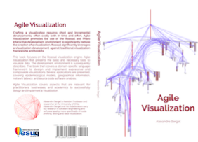

Material provided in the book is primarily made for Roassal, a visualization engine written in the Pharo programming language.
Roassal is intimate with XML, CSV, JSON. Roassal will make you an empowered data cruncher to paint and paint your data structures at will.
Many software engineering tasks involves advanced visualization techniques. Roassal, when coupled with Moose, will turn you into a surgeon for software.
Agile Visualization may be purchased online (paperback, eBook) 
A flyer is also available.
Installing Roassal is easy. You need to install Pharo. Open the Catalog browser, and select Roassal. A video illustrating these steps is online.
Our readers have had and will have a tremendous impact on the book. We always welcome feedback and comments. Material described in the book is regularly the topic of intense discussion. You can reach us via multiple channels:
Agile Visualization is supported by open-source communites, research laboratories, and companies. Thanks to all of you! In particular, we thanks Object Profile, Lam Research, RMoD, Synectique, Commissariat à l'Énergie Atomique et aux Énergies Alternatives (CEA), Komponentenwerkstatt.
Agile Visualization is written using Pillar. Thanks Damien Cassou and Damien Pollet this wonderful framework.
We are deeply grateful to for their contributions to (no particular order) CH Huang, Chris Thorgrimsson, Tudor Gîrba, Renato Cerro, Stéphane Ducasse, Yuriy Tymchuk, Natalia Tymchuk, Juraj Kubelka, Juan Pablo Sandoval Alcocer, Milton Mamani, Vanessa Peña, Ronie Saldago, Alvaro Jose Peralta, Pablo Estefo, Igor Stasenko, Faviola Molina, Ricardo Jacas, Daniel Aviv Notario, Sergio Maass, Serge Stinckwich, Bui Thi Mai Anh, Johan Fabry, Nicolai Hess, Miguel Campusano, Peter Uhnák, Martin Dias, Jan Blizničenko, Samir Saleh, Leonel Merino, Volkert, Pierre Chanson, Andrei Chis, Thomas Brodt, Mathieu Dehouck, Miguel Campusano, Onil Goubier, Thierry Goubier, Esteban Maringolo, Alejandro Infante, Philippe Back, Stefan Reichhart, Ronie Salgado, Steffen Märcker, Offray Vladimir Luna Cárdenas, Alena Beyer, Steven Kelly.
The open-source communities behind Pharo and Moose have always been a great source of wisdom. We are happy to see Agile Visualization a result of your intense energy!
@ObjectProfile Congratulations! A great team behind a wonderful and really needed agile platform for #DataViz with #LiveCoding. Refreshing!
— Offray Vladimir Luna (@offrayLC) August 14, 2016
@SergeStinckwich @ObjectProfile Very impressed by the way graphs are used for research on software quality
— Melatagia Paulin (@melatagia) August 30, 2016
@ObjectProfile congrats for this wonderful book !
— Serge Stinckwich (@SergeStinckwich) August 14, 2016
Software visualization of Project Malmo, Microsoft's #OpenSource #AI research platform. #Roassal #AgileVisualization pic.twitter.com/gAxZv6b2Na
— brackendev (@brackendev) August 11, 2016